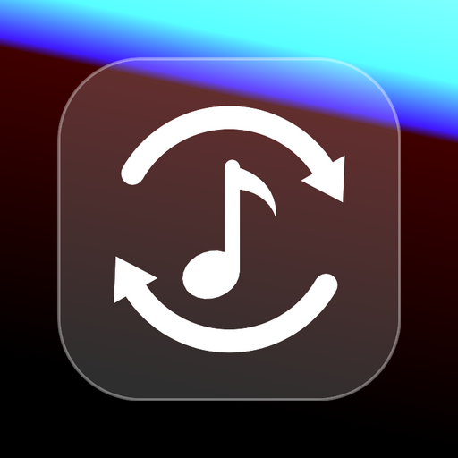

Your playlists,
everywhere.
Songport keeps playlists in sync across music services, by hand or on a schedule.
Free and open source. No account, no server, no subscription: everything runs on your phone.


Songport keeps playlists in sync across music services, by hand or on a schedule.
Free and open source. No account, no server, no subscription: everything runs on your phone.
Pick a source and a target, choose how often. Songport finds every track on the other side, shows you what will change, and keeps both in step.
Playlists, liked songs, saved albums and followed artists. Or paste the link of any public playlist.
Hourly, every 6 hours, daily or weekly. Additions only, or mirror removals too, and keep the source's order.
A preview before every sync. Tracks that were not found go to a review: pick the right one once, Songport remembers it.
You sign in on each service's own page. Access tokens are encrypted on the phone and never leave it.
Navidrome and other Subsonic servers, Jellyfin and Plex, next to the streaming services. Files too: CSV, M3U, XML, JSON.
Backups, duplicate removal, merge, split and sort, and a playlist generator driven by your own AI key.

Services marked beta work and follow each service's documented API, but have had less real-world use: reports are welcome.
Soundiiz, TuneMyMusic and FreeYourMusic are good at a one-off move. Songport is for keeping playlists in step over time, without handing your accounts to anyone.
| Songport | Online transfer services | |
|---|---|---|
| Where it runs | On your phone | On their servers |
| Who holds your logins | Only your phone, encrypted | The service |
| Account, subscription | None | Account; limits on the free plan |
| Scheduled sync, removals mirrored | Yes | Mostly paid plans |
| Personal servers | Yes | Rarely |
| Source code | Open, GPL-3.0-only | Closed |
Songport connects to the music services you choose (Spotify, YouTube Music, Apple Music, Amazon Music, TIDAL, Deezer, personal servers) with each service's own sign-in. It reads your playlists and their tracks, and, when you start or schedule a sync, creates playlists and adds or removes tracks in your own account. For YouTube Music through Google's API this means the YouTube Data API with the youtube permission, used only for your playlists and only on your device.
Access tokens are stored encrypted on the phone and never sent to Songport's developer or to any third party. There is no Songport server. Details in the privacy policy.
Android 8.0 or newer, in English, Italian, French, German, Spanish, Portuguese, Polish, Russian, Turkish, Chinese, Japanese and Korean. The guide walks through the first sync and the common errors; if something does not work as described, Settings → Diagnostics → Report an issue opens a report with the details filled in.